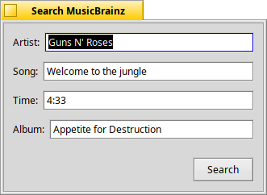

MusicBrainzSearch
Searches MusicBrainz for recordings and releases.
#include "tagkit/MusicBrainzSearch.h"
Detailed Description
Both functions perform network I/O, so always call them from a worker thread, never the UI thread. Failures (network errors, malformed responses, ...) are swallowed rather than thrown, so a failed search looks like zero results.
Requests identify the calling program; see ClientInfo.

TagView's Search MusicBrainz dialog, which calls SearchRecording(); leaving the song blank searches for cover art with SearchReleases().
Class Functions
static std::vector<RecordingMatch> MusicBrainzSearch::SearchRecording(const BString& artist, const BString& song, const BString& album, int32 maxResults = 10, int32 targetSeconds = -1)Finds recordings by artist and song. |
static std::vector<ReleaseRef> MusicBrainzSearch::SearchReleases(const BString& artist, const BString& album, int32 maxResults = 25)Finds releases by artist, for cover art without a song. |
Documentation
static std::vector<RecordingMatch> MusicBrainzSearch::SearchRecording(const BString& artist, const BString& song, const BString& album, int32 maxResults = 10, int32 targetSeconds = -1)
Finds recordings by artist and song.
If album is given, only recordings that appear on a
matching release come back, and that release is the one reported as each
match's album, year and track (and listed first among its releases for cover
art). This helps when a plain artist and song search buries the album you are
after among live versions and compilations.
Without a targetSeconds (below 0), matches come back in
MusicBrainz's own relevance order. With one, everything MusicBrainz returned is
re-sorted by how close its length is to targetSeconds (closest
first, ties keeping MusicBrainz's order, recordings with no known length last)
before being cut down to maxResults — the closer the length,
the likelier it is the same recording.
Parameters
artist- The artist.
song- The song title.
album- Optional; pass an empty string to leave it out.
maxResults- The most matches to return.
targetSeconds- The file's length, or
-1for none.
Returns
Up to maxResults matches (see RecordingMatch); empty if there were none or the lookup failed.
static std::vector<ReleaseRef> MusicBrainzSearch::SearchReleases(const BString& artist, const BString& album, int32 maxResults = 25)
Finds releases by artist, for cover art without a song.
Narrowed to titles matching album if one is given. Results
are in MusicBrainz's relevance order, with repeats of the same title and year
dropped. TagView uses this to look for covers by artist and album, which casts
a wider net than the releases of one recording.
Parameters
artist- The artist.
album- Optional; pass an empty string to leave it out.
maxResults- The most releases to return.
Returns
The releases found; empty if there were none or the lookup failed.
src/tagkit.